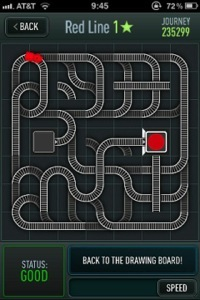

Red tape


This piece is designed on a popular iOS game called Trainyard. The game is an abstract version of what it is to be a electronic engineer, or really to solve any problem.
Rather than take the most efficient route, which would be three tracks straight to the finish, I have designed the least efficient route. The top section is essentially a binary counter which continues to extend. The lower half of the track is seemingly an extension of that binary counter, but rather than ever complete, a piece of track is continually switched and reswitched reset to create a really elaborate infinite loop. There are also pieces included at random which seem to serve no “purpose.”
I called this piece Red Tape to take a shot at government policies that often take the least efficient route to any given problem, and also to comment that those systems seem from the outset without careful scrutiny to eventually reach the destination, but are really designed simply to perpetuate themselves. These problems are systemic, inherent in the design of a given policy, approach, or structure.
This also refers to a general problem that people get stuck in where they cannot see the forest for the trees, and often get stuck continuing to do something in an endless loop rather than stepping back, analyzing their situation, and getting out of their endless loop. Or taking a step back and deciding to delete something, go back to the drawing board, rather than give into the fallacy of sunk cost. Humans have an inherent disproportionate bias toward loss aversion rather than reward gain. This can lead to people becoming attached to possessions, relationships, ways of thinking, or ways of living despite being able to acknowledge that they’re broken, burdensome, hurtful or even sub-optimal.
This is often a commentary on the inherent limitations of the scope of logic. In this case, the logical solution is to go in straight line, but although being correct, results in the least interesting approach. Logic generally has an affinity towards efficiency and operates in a binary nature that leads to a singular approach, and thus has a rather narrow scope. This also reflects the still current limitations of artificial intelligence that can only continue down a series of switches, rather than true intelligence which can recognize patterns from a broader perspective and restructure the framework.
From a broader philosophical perspective, the idea of “It’s not about the destination, it’s about the journey.” comes to mind. The journey is infinite, as is life. Stop and smell the flowers along the way, or in this case, tracks that seem to exist for no “purpose”.
Also, the red hole could be seen as the red pill or going down the rabbit hole. We really are not sure what is on the other side. This could be the afterlife, the future, the unknown, or the truth. Sometimes we are comfortable running around in circles rather than speculating what might be on the other side of that red hole.
This is also refects the inherent futility of life, and games included. On Trainyard there are thousands of different puzzles, and each time you solve one you feel as if you’ve accomplished something, but perhaps it is simply mental masturbation and you’re successfully rounding another path in a larger framework that is ultimately an infinite loop.
